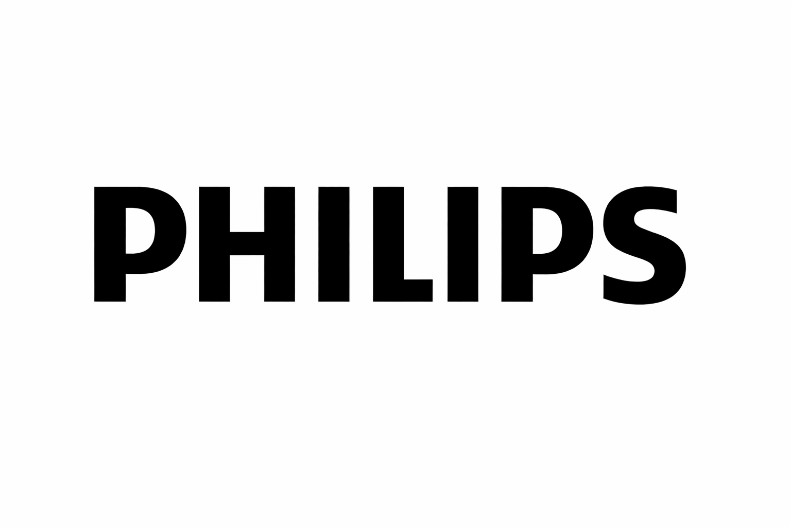

필립스 Philips
필립스는 기술을 과시하기보다 생활을 더 단순하고 건강하게 만드는 방향으로 브랜드 의미를 확장해 왔다. 전기·전자 기술은 기반이지만, 소비자가 인식하는 가치는 일상의 편의와 건강한 삶을 돕는 실용성에 있다.
최종 업데이트
필립스는 어떤 브랜드인가
필립스는 기술을 과시하기보다 생활을 더 단순하고 건강하게 만드는 방향으로 브랜드 의미를 확장해 왔다. 전기·전자 기술은 기반이지만, 소비자가 인식하는 가치는 일상의 편의와 건강한 삶을 돕는 실용성에 있다.
필립스는 어떻게 봐야 할까
필립스는 기술을 과시하기보다 생활을 더 단순하고 건강하게 만드는 방향으로 브랜드 의미를 확장해 왔다. 전기·전자 기술은 기반이지만, 소비자가 인식하는 가치는 일상의 편의와 건강한 삶을 돕는 실용성에 있다.
필립스는 어떻게 시작되고 성장했나
1891년 제라드 필립스와 프레드릭 필립스가 설립한 네덜란드의 전자 제품 브랜드로, 헬스 케어 제품, 생활 가전 제품, 조명 기기 등을 생산·제조함.
필립스의 브랜드 아이덴티티는 무엇인가
필립스의 시각 정체성의 핵심은 별과 물결이 든 원형 방패(실드) 엠블럼이다. 네 개의 별과 세 줄의 물결이 원 안에 놓인 도안으로, 물결은 라디오 전파를, 별은 전파가 지나가는 저녁 하늘의 에테르를 상징한다고 알려져 있다.
이 별과 물결 조합은 1930년 무렵 스피커 전면 장식에서 처음 한데 모였고, 원형 도안이 다른 다국적 기업의 상표와 충돌하면서 원과 회사명을 방패 안에 결합한 현재의 방패 엠블럼이 1938년에 처음 등장했다. 워드마크는 시기에 따라 형태가 다듬어졌고, 방패 문양과 Philips 글자는 사내 표준화를 거쳐 1973년 1월 1일 자로 규격이 통일되었다.
브랜드 슬로건은 2004년 'Let's make things better'를 'sense and simplicity'로 교체하며 재포지셔닝을 단행했고, 2013년 11월 13일에는 'innovation and you'를 새 브랜드 라인으로 내세우면서 방패 문장을 한층 현대적으로 다시 디자인했다. 시그니처 색은 짙은 블루 계열로 운용된다.
필립스의 대표 제품과 서비스는 무엇인가
필립스의 제품과 서비스는 기술·전자 범주에서 해석됩니다.
필립스는 지금 어떤 상태인가
국가: 네덜란드 산업: 헬스테크
필립스 연혁 — 주요 사건은 언제였나
필립스 로고는 어떻게 변해왔나

BI/CI 아카이브보관 이미지 1 BI/CI 아카이브 2보관 이미지 2
BI/CI 아카이브 2보관 이미지 2자주 묻는 질문
필립스는 어떤 산업의 브랜드인가요?
필립스는 기술·전자 분야의 브랜드입니다.
필립스의 브랜드 아이덴티티는 무엇인가요?
필립스의 시각 정체성의 핵심은 별과 물결이 든 원형 방패(실드) 엠블럼이다.
필립스의 대표 제품은 무엇인가요?
필립스의 제품과 서비스는 기술·전자 범주에서 해석됩니다.
필립스는 현재 어떤 상태인가요?
국가: 네덜란드; 산업: 헬스테크; 전자 제품; 개인관리; 의료기기
출처와 검증
브랜드명은 한글과 원어를 함께 표기하되 데이터에 없는 표기는 만들지 않습니다. 기원 국가·설립연도는 검수된 정의문에서 확인된 값을 우선하고, 없을 때만 공식 웹사이트 URL이 일치하는 위키데이터 개체의 값을 씁니다.